完整验证 {"observed_pass": 15, "observed_fail": 0, "not_run": 0, "missing_evidence": 0} V1—V3 专项 20/20 浏览器 passed=True --no-render 语义已修正 人眼图 2 张 · 外部费用 0
| 检查点 | 实际改动 | 真实前后图 |
|---|---|---|
| V1 平面可读性 / 尺寸链 | 几何·编号·注释三层分离；短编号带引线避让； X/Y 受控尺寸链闭合到总尺寸；完整索引与 A4 可打印索引页 | 入口区、洽谈区局部前后 + 全图 + 打印缩放 |
| V2 窗光 / 材质 | 透明玻璃替代发光板；窗框/竖梃/洞口深度； 窗外本地天空渐变假设；地面分缝、木饰面竖缝、踢脚收边；版本化表达输入 | 同一机位/模型的窗区局部前后 |
| V3 功能表达 / 占位 | display-wing 换程序化展墙；测试陈设分四类； 位置由本布局动线/分区派生；工程量恒 0 影响 | 功能区局部前后 + 两布局最终人眼图 |
| 类别 | 结果 / 证据 |
|---|---|
| 自动断言 | 完整验证 {"observed_pass": 15, "observed_fail": 0, "not_run": 0, "missing_evidence": 0}；
V1—V3 专项 20/20；图面标注 0 重叠 / 0 出界 / 最小字号 8.5；
浏览器下载 SHA 一致；原 15 项回归 15/15。见 checks.json、closeout/、
visual/capture-observations.json。 |
| 人工目检 | 逐张看前后全图、入口/洽谈区局部、窗区/功能区局部、
A4 打印缩放，逐处结论与未解决项见 manual-visual-review.md。
自动断言不代替人工看图，不以非空 SVG 或亮度阈值宣布通过。 |
| 层 | 状态 |
|---|---|
| function_level | {"status": "observed_pass", "checks": ["R4-05"], "counts": {"observed_pass": 1, "observed_fail": 0, "not_run": 0, "missing_evidence": 0}} |
| contract | {"status": "observed_pass", "checks": ["R4-02-A", "R4-02-B", "R4-03-A", "R4-03-B"], "counts": {"observed_pass": 4, "observed_fail": 0, "not_run": 0, "missing_evidence": 0}} |
| http | {"status": "observed_pass", "checks": ["R4-A-SUBMIT", "R4-A-ZIP", "R4-B-SUBMIT", "R4-B-ZIP", "R4-01", "R4-07", "R4-08"], "counts": {"observed_pass": 7, "observed_fail": 0, "not_run": 0, "missing_evidence": 0}} |
| external_evidence | {"status": "observed_pass", "checks": ["R4-06"], "counts": {"observed_pass": 1, "observed_fail": 0, "not_run": 0, "missing_evidence": 0}} |
| real_render | {"status": "observed_pass", "checks": ["R4-04-A", "R4-04-B"], "counts": {"observed_pass": 2, "observed_fail": 0, "not_run": 0, "missing_evidence": 0}} |
| browser | {"status": "separate_script_not_run_here", "evidence": "var/evidence/roadmap/<batch>/browser/verification.json", "note": "本脚本不启动浏览器；真实 Edge 验收由 verify_w2_r4_browser.py 单独执行"} |
| manual_visual | {"status": "reported_in_review_packet", "evidence": "deliverables-for-review/roadmap/<batch>/manual-visual-review.md", "note": "自动断言只做几何/编号/字符串对账，不代表人工目检；图面可读性、材质尺度与光照层次必须由人工看图判定并单独记录"} |
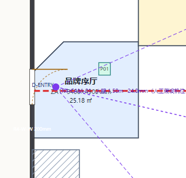
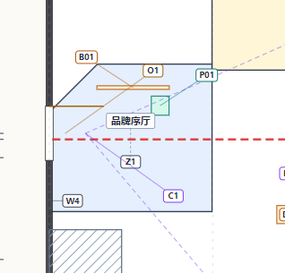
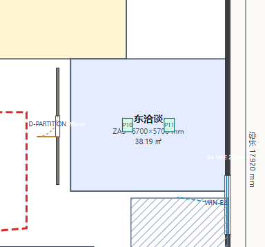
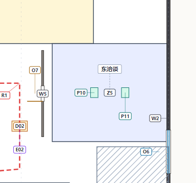
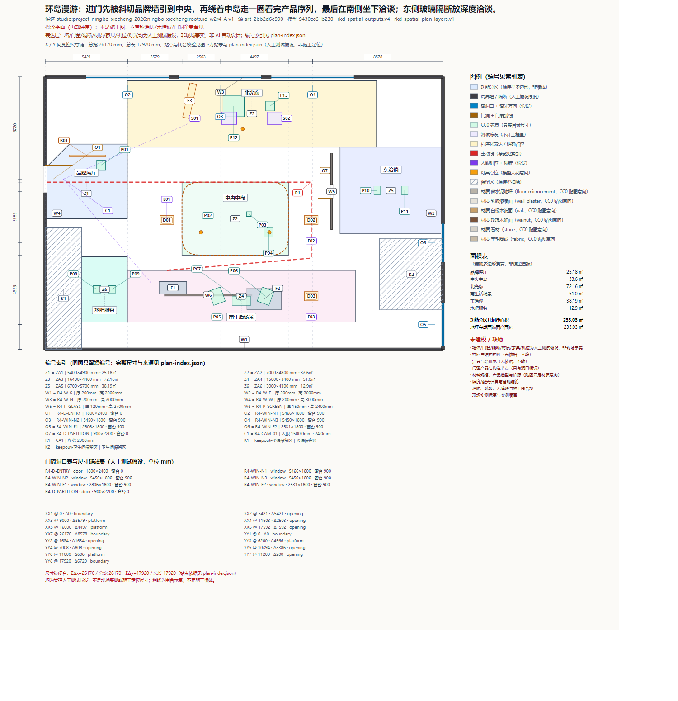
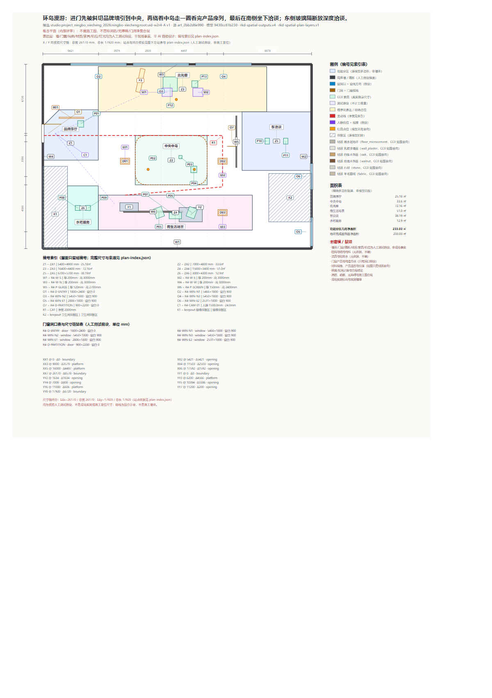
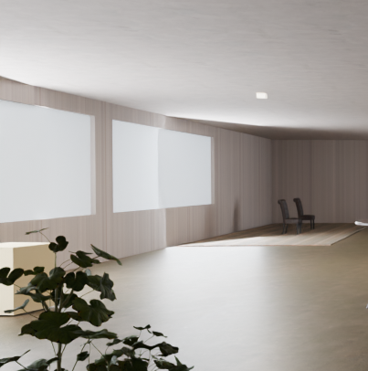
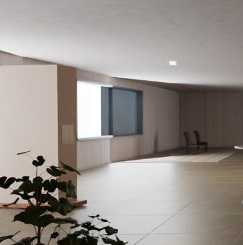
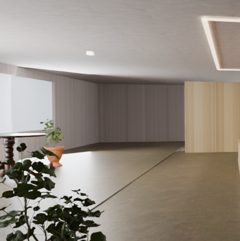
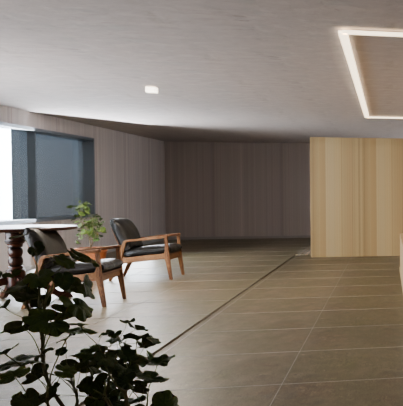
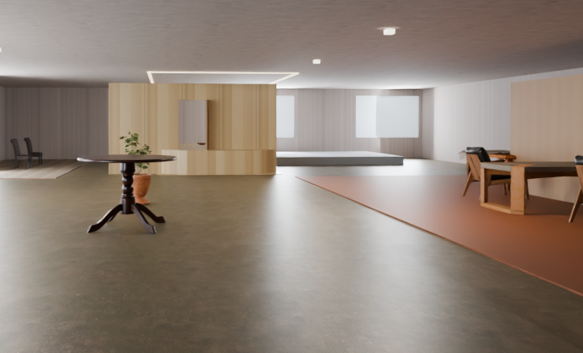
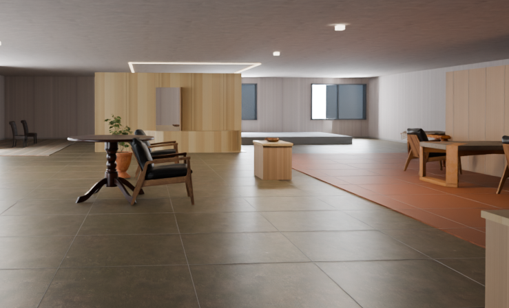
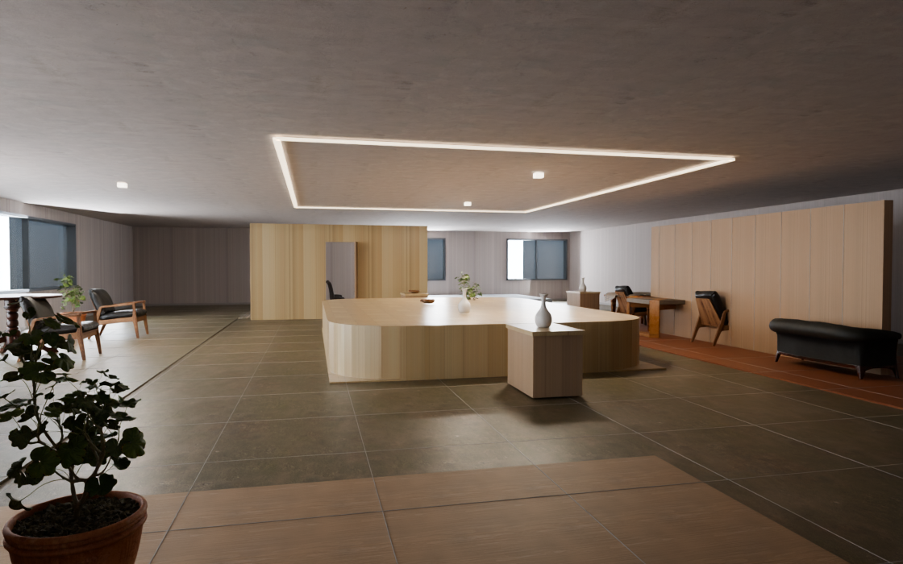
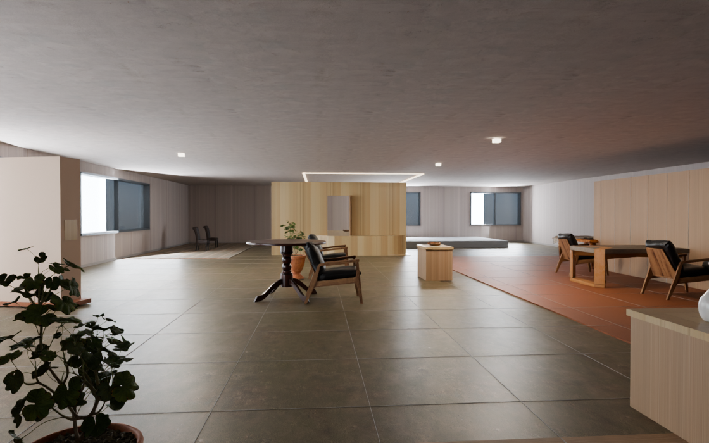
manual_boundary_not_site_verified 测试参数，
表达层墙/门窗/材质/陈设全部 site_verified=false。
按 docs/26 硬节点 3，不能外推为「当前具体版本已确认」。
已准备 basemap-confirmation-card.md（版本/边界/入口/保留区/已知与假设/待确认点/图面），
用户明确确认前停在阶段1边界，不生成该项目阶段2；人工工程样板验证不受阻塞，继续完成本批。
本卡不是替用户签字。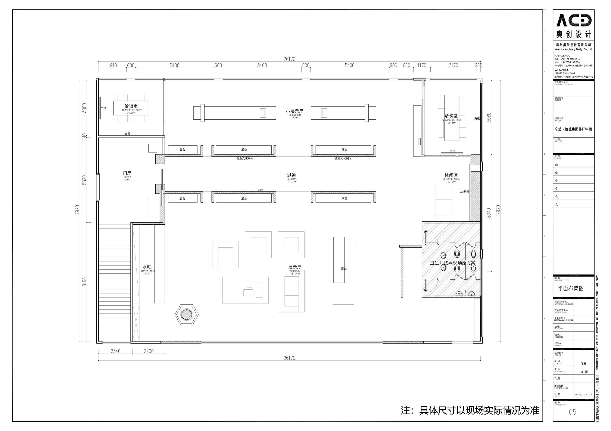
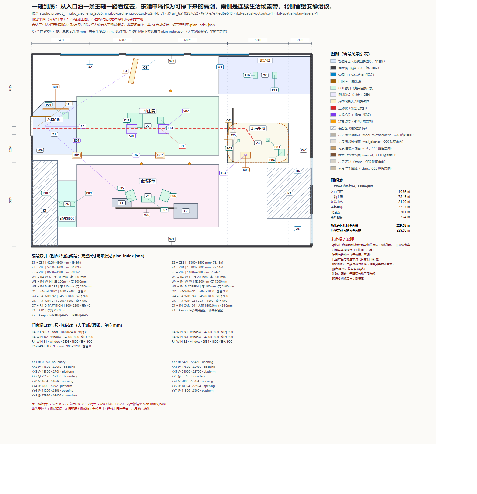
做：V1—V3 全部检查点、--no-render 语义修正、底图确认卡、
两布局完整源模型/表达输入/场景/平面/PNG/ZIP、四项受控变更与取消晚到/任务定位回归、
专项断言、浏览器与全量回归、4 类真实缺陷修正。
未做：W3/W4、付费/外部调用、PG/NAS/账号/租约平台、全套天花/立面/多视角/ 材料实物板/汇总客户 PDF、柱网洁具与照度合规、现场实测、用户项目阶段2、 AD 修改与用户设计确认、W2 放行宣告。
图片与费用：本机新生成人眼效果图 2 张；平面全图/局部/打印截图 16 张； 人眼图前后与局部裁剪 12 张；浏览器桌面/移动与平面预览 4 张。 外部模型调用 0 次、外发图片 0 张、tokens 0、费用 0；密钥未使用、未落盘。